使用指南
1 第三屏介绍简介
5 微官网
9 门店设置
13 微酒店
2 基础建设
6 微团购
10 微预约
3 微活动
7 微调研
11 微房产
移动互联网的趋势
平台化电子商务最缺的不是商家是消费者。
哪里有人哪里就有商业，哪里就有盈利空间。据第三方统计70%的手机用户开通了个人微信，其年龄涵盖了小学生至老年人，各年龄阶层的人群。截止目前腾讯已拥有4亿的微信用户，7亿的qq用户。消费者才是企业追逐的目标，人的数量决定了财富的数量。
微信营销的趋势与巨大利润空间
微信营销是继微博后的最大营销机遇！
淘宝的第一批用户是一批什么都敢尝试的大学生，如今他们已经大多成为千万、亿万的商务人群。微信营销时代已经到来，其势不可挡的趋势，已严重冲击着传统的销售渠道。错过了淘宝时代，错过了微博时代，不要错过微信营销时代。基于微信营销的第一批企业必然成为未来的微信首批富豪。
微信的粘性和使用惯性
没有人会天天上淘宝，也没有人会天天刷微博——但微信可以。
首先微信是一款沟通工具，实时通讯的特性决定了其使用价值，朋友圈的分享让社会化关系代替了点对点的交互，这不仅是一种关系，更是影响力！更是控制力！基于关系网的微信，平民也有明星的感觉。其用户黏度没有任何一个产品可以比拟。微信用其巨大的威力吸引、稳定着消费者，消费者已经准备好了，企业还不来吗？
企业微信公众账号的作用与开通意义
企业微信公众账号是企业媒体发布平台、销售信息发布平台、危机公关平台、消费者互动平台、促销活动开展平台、新品展示平台、产品在线销售平台、网上支付平台、调研平台、公司企业文化传播平台、人才招聘平台等，一切企业关注的，企业需要的在企业微信公众账号都可以实现！！
企业为什么要开通、运营企业微信公众账号
重点的关键点——品牌、产品销售、人才、客户
1) 企业微信公众账号的媒体属性:10万个粉丝等于地方性报纸;100万个粉丝等于全国性的报纸头条新闻。
2) 产品销售平台:在线购买、在线支付、促销活动。最活跃的、反应速度最快、互动最强的电子商务平台
3) 人才招聘的平台：免费的人才招聘渠道，未来人才招聘的主流渠道
4) 客户：客户在线互动、客户体验、新品试用、消费者意见调研、有奖活动、在线咨询甚至网上订餐、送货服务、钟点服务、上门维修等。
企业微信公众平台的现状
功能单一、操作复杂、用户体验差、没有差异化功能。
TIPS1:什么是微信公众平台？
微信公众平台是腾讯公司在微信的基础上新增的功能模块，通过这一平台，个人和企业都可以打造一个微信的公众号，并实现和特定群体的文字、图片、语音的全方位沟通、互动。微信公众平台注册地址：https://mp.weixin.qq.com/
TIPS2:第三屏主要用来做什么？
第三屏平台主要是为企业公众号提供个性化服务，他是一个第三方平台，企业只需要把公众平台接口地址和Token换成第三屏的接口，即可以实现第三屏平台上所有的功能.
第三屏全面解决当前企业微信营销困境
| 当前企业遇到的困境 | 解决方案 |
|---|---|
| 传统网络营销遭遇瓶颈 | 微营销成为企业营销新渠道 第三屏为企业微信营销提供智能的服务平台和完整的解决方案 |
| 微信营销有理论、无方法，想法无法落地 | 第三屏——理论加实践的产物 第三屏平台根据市场行业需求，制定行业标准解决方案。 |
| 腾讯对企业开发要求门槛过高 | 第三屏平台解决企业开发烦恼 第三屏大部分技术研发人员来自百度、腾讯，强大的技术后盾企业微信开发提供有力的保障。 |
| 腾讯公众平台无法满足企业需求 | 行业需求，定制开发 根据市场上目前行业的需求，设定相应的功能，从而满足了企业微信营销的需求。 |
| 企业定制开发成本高、周期长 | 第三屏——微信智能服务平台 第三屏在定制开发的基础上，抽取大部分行业定制需求，对产品进行标准化，企业无需开发即可实现强大的功能。 |
| 微信5.0群发功能限制，个性化服务凸现 | 第三屏——功能强大，满足个性需求 针对微信商家公众号提供与众不同的、有针对性的、更为贴心的、核心需求的功能和服务 |
操作简洁
第三屏平台的管理界面简单易用、操作方便，大量人性化设计，一分钟开启微信营销，无需安装任何软件，全自动“云”平台，多账号管理，只需要简单的设置即可完成复杂的微信营销推广功能。
功能强大
通过第三屏平台，用户可以轻松管理自己的微信各类信息，对微信公众账号进行维护、开展智能机器人、在线发优惠劵、抽奖、刮奖、派发会员卡、打造微官网、开启微团购等多种活动，对微信营销实现有效监控，在线优惠劵、转盘抽奖、微信会员卡等推广服务更是让微信成为商家推广的利器，智能客服的可调教功能让用户真正从微信繁琐的日常客服工作中解脱出来，真正成为商家便利的新营销渠道，极大扩展潜在客户群和实现企业的运营目标。
专业团队
一站式管理，平台支持，拥有多年网络营销经验的管理团队，强大的技术支持，专注于社会化媒体的研究，自有全国百万订阅量公众账号、全国主要城市区域号，以及微信电商团队实际操作，运营上海本地公众账号用户过万，熟练掌握获取本地用户的方法，不做整合营销，我们只专注于微信。
资深背景
技术团队由国内知名IT公司（百度、腾讯）核心成员组成、其技术总监为原百度商务搜索部技术经理，商务总监为原腾讯IMG商务经理，运营团队有着丰富的互联网推广经验和资源，并与腾讯保持密切合作，因此可以为商家提供一个更智能、更便捷的微信公众服务平台。
如果是代理商开户请直接联系当地代理商，如果是总部直销客户，请联系相关业务员，目前第三屏暂不支持在线充值，业务人员会发第三屏相关银行账户信息，充值好后告诉业务人员，业务人员和公司财务核实后即可完成充值。
登录mp.weixin.qq.com，点击注册填写相关信息即可申请微信公众号，微信公众号只能在PC端登录，不能用手机端，公众号分服务号和订阅号，企业可申请服务号，个人、自媒体申请订阅号，服务号每个月限制群发一条，而订阅号每天可发送一次。
登录第三屏后会提示一键升级或手动升级，将您的公众账号和密码填写上，即可实现升级。
注意：
1、公众号名称与微信公众平台公众号名称保持一致。
2、如果您是服务号，将您在公众平台申请的AppId和AppSecret填写上去，提交完id和密钥后，可以在【菜单设置】中设置各个菜单项，然后进行发布，您的微信公众号便支持自定义菜单了
首次关注回复：指粉丝关注微信公众号后推送的第一条信息，可以是文本，也可以是图文，如果需要图文回复，点击切换到图文模式。
TIPS：如果想关注时默认进到微网站，可以不填写图文内容，然后在图文外链地址里面填写微官网首页地址，微官网首页地址在微官网设置里可以看见。
文本回复指添加关键后回复的内容是文本。点击添加按钮
如上示例：定义了关键词你好，当用户在公众号发送“你好”的时候，将会回复“哈哈”
如果想定义多个关键词用英文逗号隔开，拒绝中文逗号，如：你好,在吗,哈哈
匹配类型分完全匹配和模糊匹配。
点击素材管理，进入素材管理界面，选择单图文或多图文。
单图文是指只显示一个图文。填写触发关键词，图文标题、图文简介，上传图文封面。
地址点击图片跳转到的URL。
多图文是指在显示多条图文。
在这里多图文需要一条一条创建，点击图片上的“铅笔”符号，进行某一图文的编辑。
地址点击图片跳转到的URL。
添加完之后，回到关键字回复，回复类型选择图文，在图文资料中选择你要回复的图文即可。
注：素材管理是整个第三屏平台的素材库，关键字回复中的内容可以从素材的图文中选择。
自定义菜单是企业微信公众号消息框底部的导航菜单，可以很方便用户进行交互，相当于一个轻量级的APP。
目前自定义菜单只对服务号开放，服务号认证需要企业认证，所以如果是订阅号这个功能是用不了的，如果服务号还没有申请自定义菜单，可以点击-高级功能-开发模式，会有一栏会话界面自定义菜单，点击申请就可以了，申请成功后的界面如下：
将AppId 和AppSecret填写在第三屏平台授权里
菜单设置:自定义菜单目前限制只能3个一级菜单，5个二级菜单，每一步设置后要保存菜单。
主菜单名称就是显示在消息框的一级菜单，可以回复文本或图文，图文信息在素材管理理设置好后，可以选择。
添加二级菜单，点击一级菜单后可以创建二级菜单，二级菜单只能同时启用5个。
点击保存菜单，保存自定义菜单设置，注意这时候并未生成自定义菜单，需要点发布自定义菜单。
用户点击“新增”，添加商家店面的信息，多个店面可添加多条LBS。
使用方法：
1、 LBS数据：设置商铺的地理位置即可；
2、 填写标题、店面封面、电话、简介、详细页内容。
优惠券是用于微信上与顾客互动的一种营销方式，不仅可以展现自己的产品，更能让顾客在使用此项功能时感受到更多的乐趣。
使用方法：
1、新建优惠券活动；
2、填写活动开始的内容；
3、填写活动结束的内容；
4、设置奖项，设定活动时间、中奖几率、触发关键词和相应的奖品，每人每天参加次数和每人参加的总次数，确定设置后系统会根据设定的中奖几率产生相应的SN码，保存活动；
5、设置活动开始；（点击开始活动后，可以修改其他活动内容,活动开启会自动生成SN码，也就是兑奖码）
6、设置活动结束；（你设置的活动结束时间到了会自动结束活动，你也可以时间没有到直接结束活动）
7、数据监测：查看活动粉丝中奖详情；
8、删除活动（最好是在最后兑奖时间过了，再删除活动）
该模块可为商家提供刮刮卡抽奖服务，全网第一个可以通过微信玩刮刮卡，用户通过手机屏幕进行刮奖的游戏！
使用方法：
1、进入抽奖设置，设定活动时间、中奖几率、触发关键词和相应的奖品，每人每天参加次数和每人参加的总次数；
2、设置活动开始；活动开始时间
3、设置活动结束；（你设置的活动结束时间到了会自动结束活动，你也可以时间没有到直接结束活动）
4、数据监测：查看活动粉丝中奖详情；
5、删除活动（最好是在最后兑奖时间过了，再删除活动）
该模块可为商家提供转盘抽奖服务，商家通过设置活动时间，预计参加抽奖人数，相应奖项和触发关键词，由网友在线参与抽奖。
使用方法：
1、进入抽奖设置，设定活动的类别，设定活动的开始和结束时间，每人每天参加次数和每人参加的总次数，设置活动回复关键词“大转盘”，确定设置后系统会根据设定的中奖几率产生相应的奖项；
2、活动设定后，在规定时间到时，网友发送关键词如“大转盘”，就可以参与大转盘活动，中奖后可根据手机号兑奖。
商家采用幸运机的活动来吸引用户，与用户之间产生互动，从而促进企业营销的一种手段。
使用方法：
1、进入抽奖设置，设定活动时间、中奖几率、触发关键词和相应的奖品，每人每天参加次数和每人参加的总次数；
2、设置活动开始：活动开始时间；
3、设置活动结束：（你设置的活动结束时间到了会自动结束活动，你也可以时间没有到直接结束活动）；
4、数据监测：查看活动粉丝中奖详情，中奖后根据手机号兑奖；
5、删除活动（最好是在最后兑奖时间过了，再删除活动）
全新微活动“一战到底”重磅上线，有丰富的题库系统；想提高用户粘性吗？想跟用户激情互动吗？想提高用户对于商户的认知吗？这一切，尽在“一战到底”。开启此功能，直接发布一战到底活动，设置活动内容、奖项及考题，可带给用户刺激的挑战。
使用方法：
1、 点击“新增”，进入新增界面，编辑活动名称，活动时间，触发关键词（如：一战到底），图文封面，活动说明，活动规则；
2、 奖品设置、数量设置，根据商家需求填写，会在用户答题完毕显示；
3、 保存并设置考题，进入题目设置页面，可自定义添加题目，插入行业相关问题提高用户的认知，如不设置直接保存，则系统默认使用原有题库。
4. 积分累计到活动结束后根据排名顺序派发相应奖项。
备注：
（1）每天每个用户只能参加一次答题，每次答题数可设置,答对加分，答错不扣分；
（2）用户参加答题需提交姓名及手机号码，商家可查询；
（3）积分累计到活动结束后，可在数据监测中查看排名顺序参与人数、答题率及用户信息。
粉丝可以在微吧里发布话题，商家可据此得知粉丝感兴趣的话题等，了解粉丝的需求。
试用方法：
1、设置微吧关键字，展示图片和微吧描述，保存；
2、在话题管理中查看粉丝感兴趣的话题，也可以发布话题让粉丝参与。
使用方法：
商家名称：商家的名称
触发关键词：用户输入触发会员卡的关键词。
填写会员卡发放时间、商家所在地区、商家详细地址、联系方式和会员卡说明，通知，特权等。
点击领取后，会生成用户会员卡号。
使用方法：用户在手机端领取会员卡之后，会在后台显示会员记录，商家可以在会员卡领取记录里面，设置充值等功能。
使用方法：商家可以通过数据监测查看到会员的信息，选择用户，记录用户充值或消费情况。
1、商家可设置员工签到积分，商家根据自己的需求设置相应的奖励积分，点击保存
使用方法：进入会员卡设置界面，在会员卡通知一栏，编辑通知标题内容，可以嵌入图片文字等内容，点击保存即可。
使用方法：进入会员卡设置界面，在会员卡特权一栏，编辑特权内容，可以嵌入图片文字等内容，点击保存即可。
统计所有的会员卡领取情况，会员信息和充值、消费情况。
需要设置关键字，回复内容是图文形式，然后在图文中的地址设置上微官网的地址，这样点击图文就会跳转到微官网，每个商户的微官网地址是唯一的；
默认只有一个微官网首页，可以通过“+”、“-”增加或减少微官网的页面。
微官网目前支持首页模板、列表页模板、详情页模板。多达几十种模板可以随意任意组合，快速打造超强超炫的微官网。直接选择喜欢的模板风格，确定选择即可，同时支持顶部导航，组合样式丰富多彩。
首页中版块点击跳转到其他页面，需要设置跳转页面，商家需要先添加好子页面，然后在目标页面中选中该页面即可；
设置好后点击保存，手机上即可看到效果。
使用微团购可进行在线团购，创造销售机会，也方便商户管理。
使用方法：
1、新增团购，进入编辑页面后，设置触发关键词、活动名称、市场价和团购价、活动开始时间和结束时间、团购的商品图片和简介等功能；
2、增加特别提醒，如"本商品不支持退换货"等；设置好后保存；
1、点击数据监测，进入订单管理页面，会出现客户团购的信息；
2、商家可以点击右上角根据时间查询使用状态“全部”、“已使用”、“未使用”等信息；
使用方法：进入微调研设置界面，设置触发关键词、调研名称、开始时间结束时间、编辑图片信息，点击保存；
使用方法：点击题库管理，添加品牌：新增图库，编辑题目名称和选项，选项至少两项；
使用方法：点击数据监测，查看意见反馈，点击查看详情可以看到用户每个问题的选项；
微投票是利用第三屏平台打造的一款投票系统，可以调查粉丝对哪些问题感兴趣或者让粉丝投票哪些地方做的不足。
1、就像您使用我们其他功能模块一样，设置一个触发投票的关键字，以及图片信息，设置上投票的开始时间和结束时间；
2、填写投票的简介，如“您觉得我们的官网哪里做的不够好？”；
3、设置答案选项，如选项一“界面”，选项二“功能”等，至少设置两个选项；您也可以设置您项调查的内容。
点击“数据监测”，查看粉丝投票的答案，从而做相应的调整。
门店设置类似于LBS，数据来源于LBS设置，门店设置里可以将LBS标记改成门店标记，就可以在优惠券、抽奖、预约、团购等活动中指定门店消费。
门店管理——添加门店：编辑门店的基本信息，包括名称、电话、地址、密码、图片、实景、门店所在的地区，并在地图上标识，最后编辑门店简介，点击保存；
微预约是商家利用第三屏平台实现在线预约的一种服务，可以运用于汽车、房产、酒店、医疗、餐饮等一系列行业，给用户的出行办事、购物、消费带来了极大的便利！且操作简单，响应速度非常快，受到业界的一致好评！
1、点击“在线预订”—“新增”，填写触发关键词，设置图片、预订开始时间、结束时间、预订人数、填写电话号码、预约地址；
2、填写名称描述和描述，名称描述指描述的属性，如宝马车预订时，名称描述填写“车型”， 描述内容可以是“宝马X3”， 如果是多个选项，用逗号分隔开，如“宝马X3,宝马X5”,这样的效果是，让用户选择宝马X3或宝马X5的车型，多选一的效果，最多可以设置3对描述；
点击“数据监测”，进入“数据监测”界面，会显示预订人数、预订的属性、备注等信息。
11.微房产
微房产是利用第三屏平台打造的一款全新超炫酷房产官方网站，其功能非常强大，包含了楼盘介绍、子楼盘管理、楼盘相册、房友印象以及专家点评等功能，更有360度全景看房超强大功能震撼登场！现在就花几分钟时间来看一下如何打造您的微房产官网吧。
1、就像您使用我们其他功能模块一样，设置一个打开微房产首页的触发关键字，以及图文回复的消息标题，选择完全匹配模式，上传图文消息封面和楼盘顶部图片，设置相册的名称；
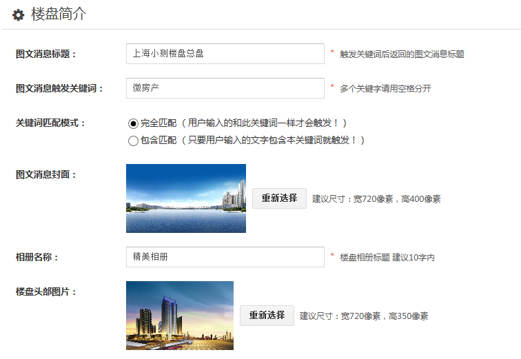
2.上传户型头部图片，在地图上设置标识；
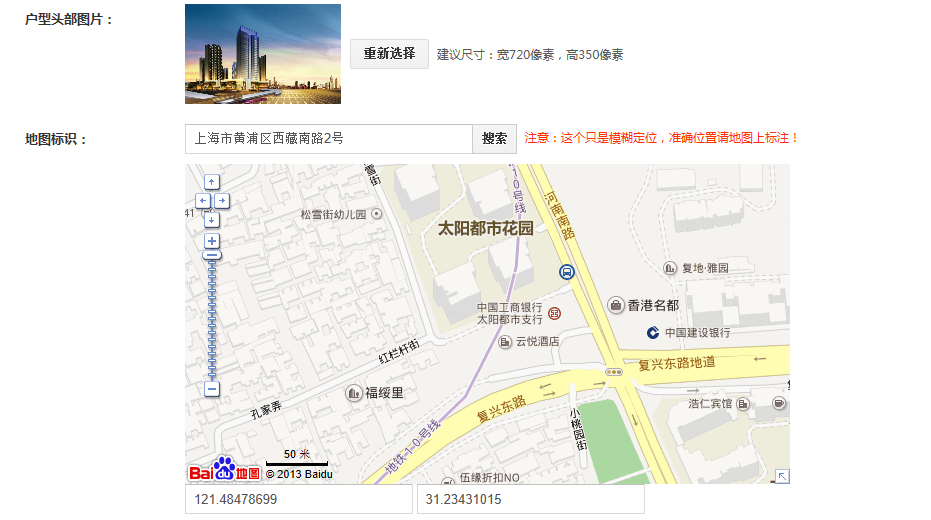
3、编辑楼盘简介、项目简介、交通配套，点击保存即可。
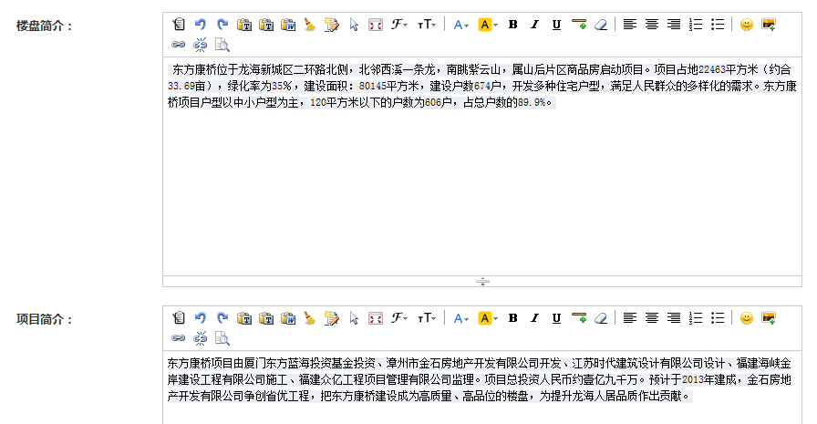
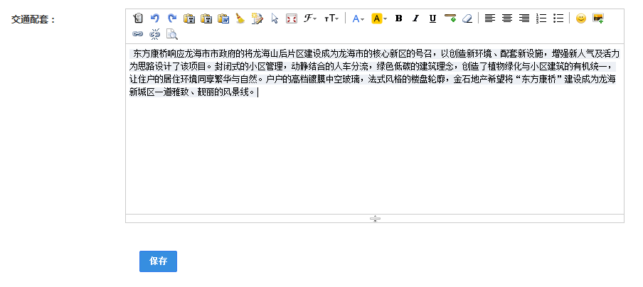
“子楼盘”：如果您的楼盘是由多种楼盘类型组成的，比如既有别墅群，又有公寓、商品房等，那我们建议您在子楼盘内进行分类添加相应的子楼盘。
1、点击“添加子楼盘”，设置子楼盘名称，显示顺序、子楼盘介绍，点击保存；
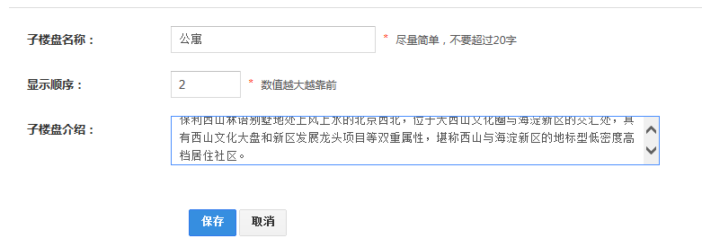
2、点击“操作”板块的两个按钮，分别可以进行编辑和删除操作。
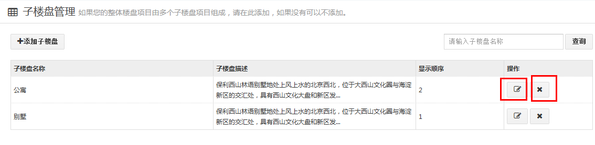
详细添加您的户型内容，特别请您注意的是我们可以为您提供制作360度全景户型展示功能，如果您需要此功能，请联系我们的客服。
1、点击“添加户型”，设置户型名称、选择子楼盘、楼层设置、建筑面积、房屋户型、显示顺序、户型介绍，添加户型图片，点击保存；
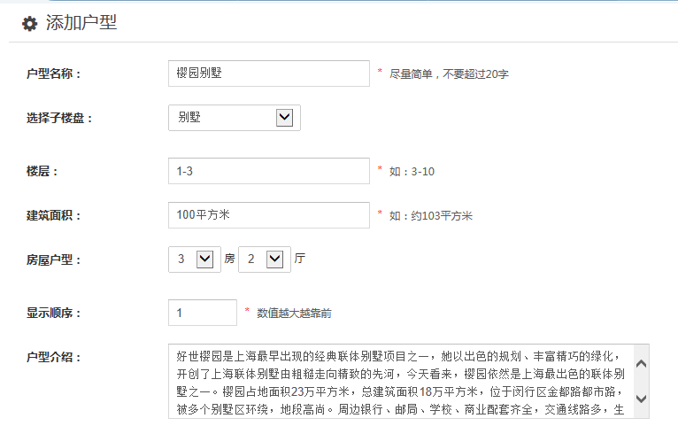
2、点击“管理全景图”，进入管理全景图界面，继续点击“添加全景图”，设置全景图标题，上传图片。（为了能更好的展现360度全景图效果，全景图所需要的规格请向客服咨询）
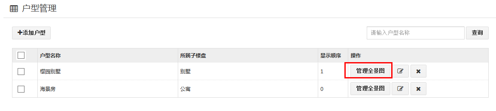
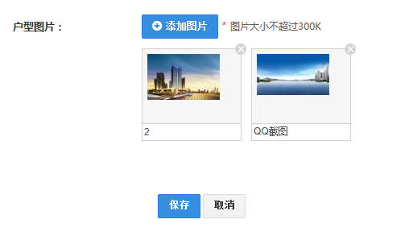
注意：360度全景图制作要点：
（1）硬件配备
数码单反相机,鱼眼镜头,全景云台,三脚架,硬件设备推荐表
（2）如何制作一个360度全景？
360全景不是凭空生成的，要制作一个360全景，我们需要有原始的图像素材，原始图像素材的来源可以是：
A、在现实的场景中，使用相机的全景拍摄功能得到的鱼眼图像
B、通过建模渲染得到的虚拟图像
下文中的表格对比了在不同的设备、拍摄机位、拼合模式、拍摄难度下所能获得到的鱼眼图像：
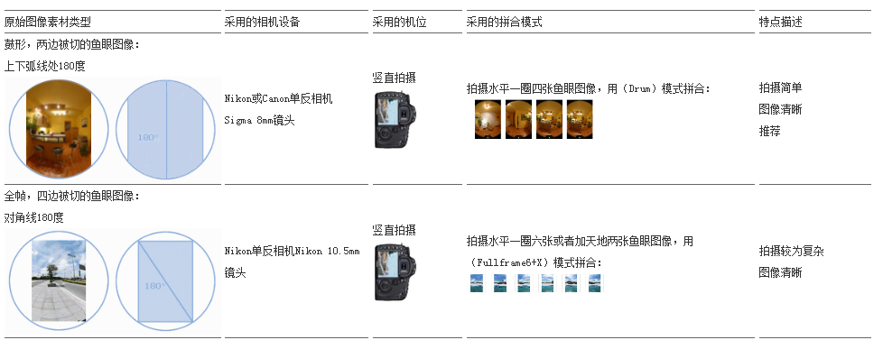
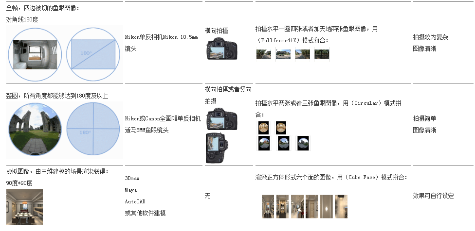
C、如何使用图片素材来生成360全景图片？
第一步：拍摄全景图原始素材
由专业的摄影师使用专业相机、鱼眼镜头以及三脚架拍摄汽车、房间或者其他需要360全景展示的对象照片 我们来看下备用的三张原始素材
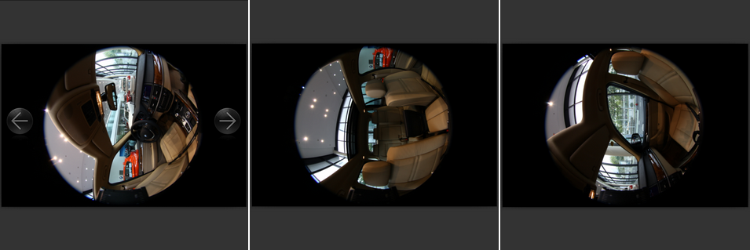
第二步：使用“PTGui Pro”软件合成全景图片
下载“PTGui Pro”软件（ 下载地址: http://forum.xitek.com/thread-425467-1-1-1.html）并安装，然后打开软件：
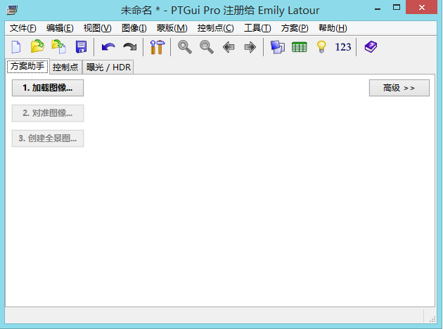
根据提示，点击“加载图像”，将拍摄的全景图原始素材导入，如下图：
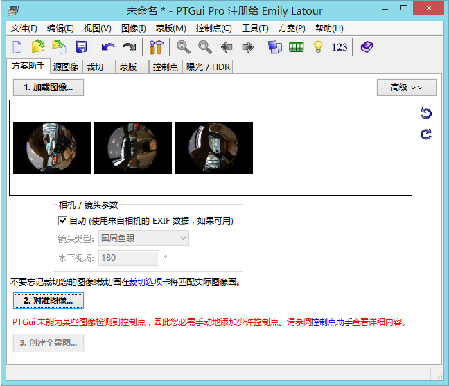
接下来点击“对准图像”
如果图像拍摄的位置准确，软件会直接进入到全景图编辑流程
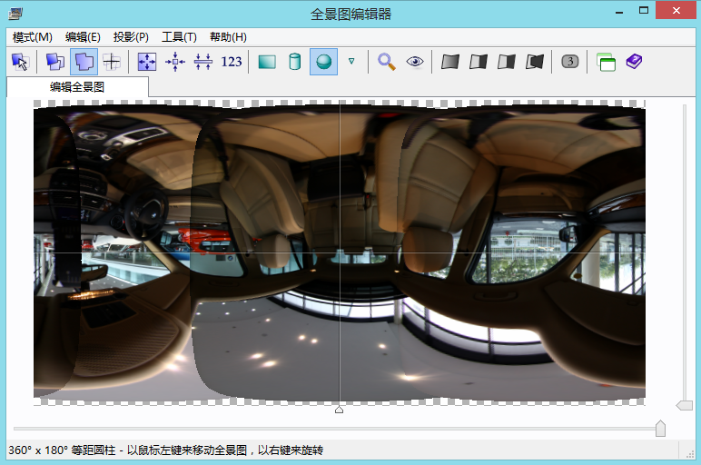
通常，这里我们不要对图片进行改动，直接关闭编辑器进入下一步“创建全景图”而有时候图像拍摄的不那么准确，那么我们需要通过手动的方式来对图片进行调整如图：
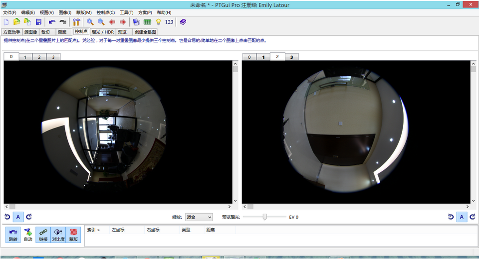
我们需要比对左右的2张图片，找到图像上重合的点（至少3个点）来进行标记如图：
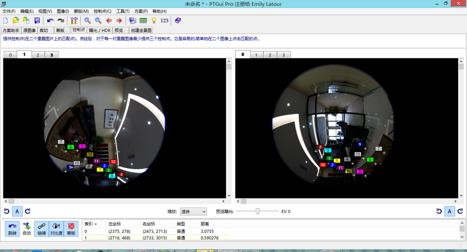
在上图我们一共找了若干个两张图片重合的点并作了标记，如此这般，需要对全部有可能有重合的图片都至少标记3个“控制点”。
调整完图像之后，我们可以创建全景图了
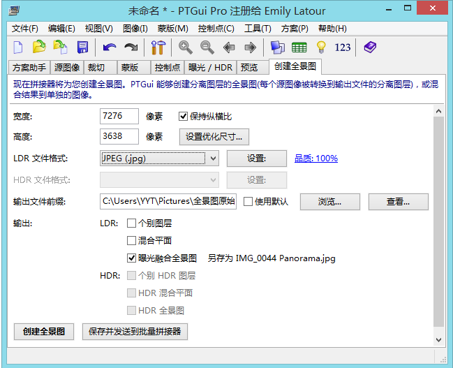
设置输出的文件目录，点击“创建全景图”，我们就获得了加工好了全景图片。来看下我们得到的全景图片：
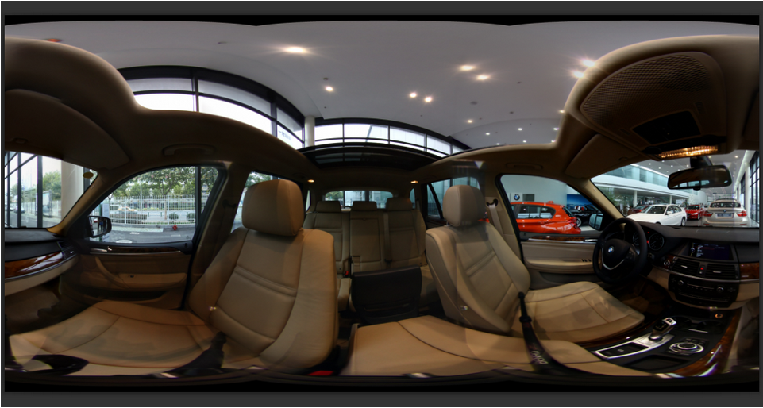
这个图片就是所谓的“全景图片”了，看得很晕吧，没关系，还只是半成品，通过第三步我们将进一步加工这张图片以生成效果精美的360全景展示效果
第三步：使用“Pano2VR”软件实现360全景效果
下载“Pano2VR”软件（ 下载地址）并安装，然后打开软件：
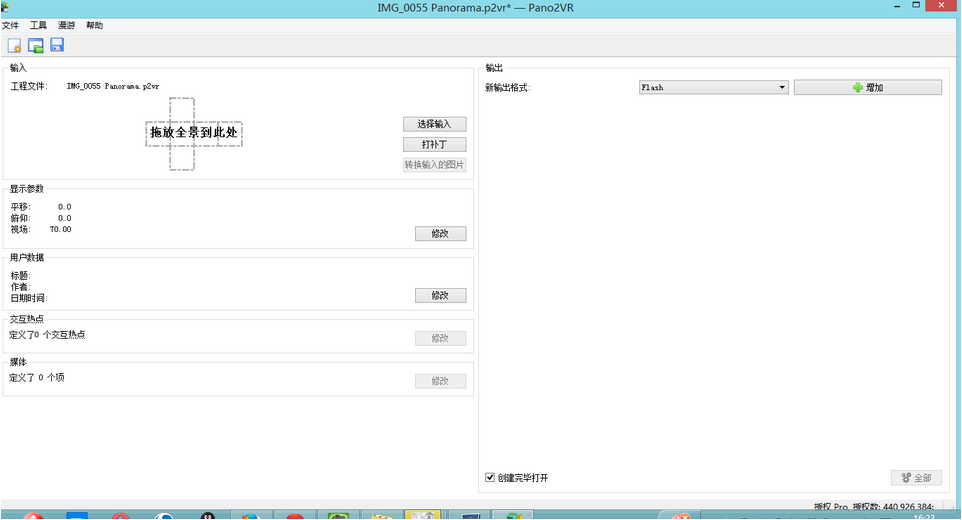
在上图中，点击“选择输入”，将第二步生成的全景图片导入进去；同时点击“新输出格式”的下拉框，选择“HTML5”选项，然后点击“增加”按钮如图
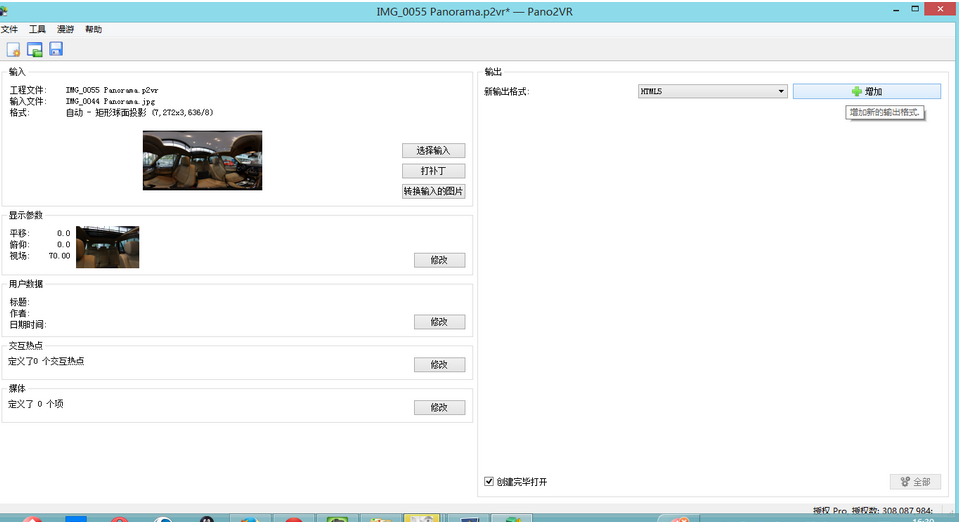
点击增加按钮后得到
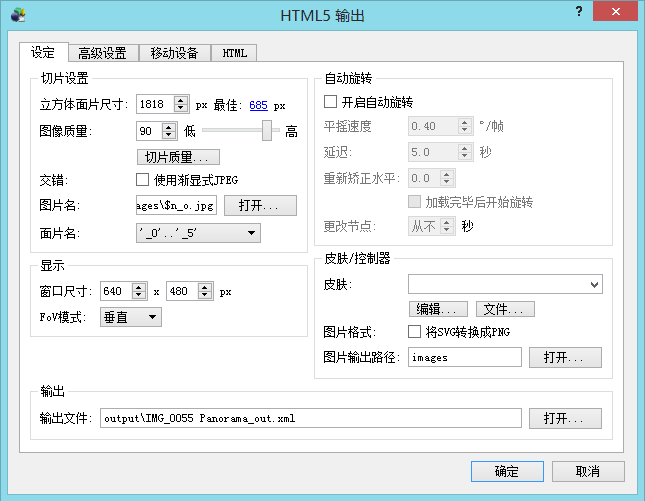
设置立方体面片尺寸为700px
设置输出文件的输出目录后，点击确定，就开始生成360全景效果了
打开输出目录我们看到
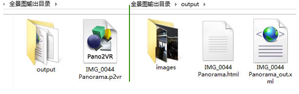
此时，浏览器会自动打开上图中的.html文件，360全景效果就可以被欣赏到了
请记得将“images”目录下的6张图片通过第三屏后台上传全景图片的位置上传到第三屏的服务器，您就可以通过手机端来查看360全景效果了。
具体的操作步骤可以查看：http://www.weixinrs.comres/360quanjing/zhizuo360quanjing.html
3、在“操作“栏目，点击这两个按钮，分别可以进行编辑和删除操作。
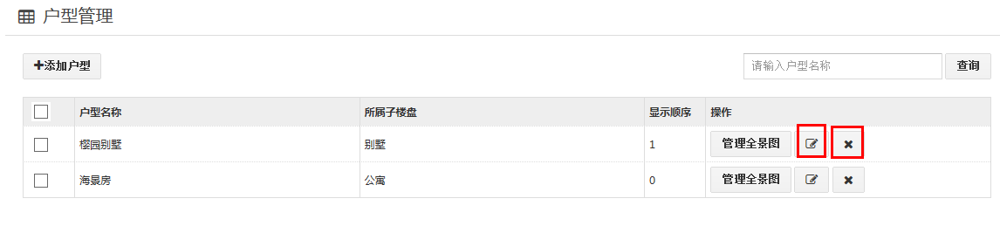
“楼盘相册”：用于添加和您楼盘相关的各种精美图片，在前台我们会用独特的方式进行图片展示。
1、点击“添加相册“，进入”添加楼盘相册“界面，设置相册名称、显示顺序、相册介绍、添加相册图片，点击保存；
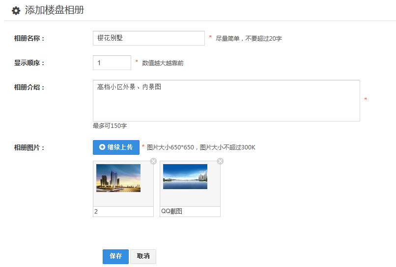
2、在“楼盘相册管理“界面，点击以下两个按钮，分别进行编辑和删除操作；）
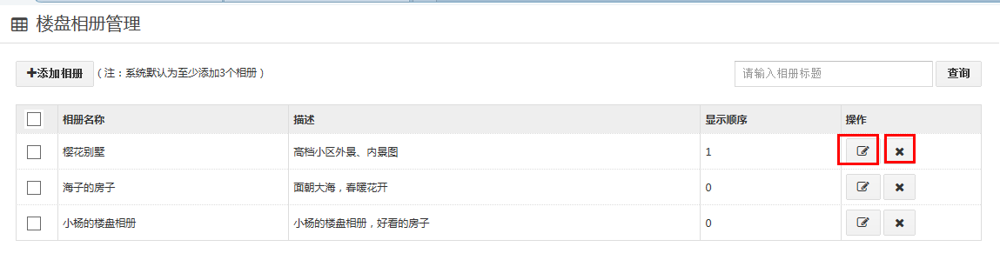
1、进入“房友印象”管理界面，点击“添加印象”，添加标题：添加能代表您楼盘特点的印象短语，如“无敌海景”、“美轮美奂”、“成熟学区”等，为保证显示效果完美，请您添加6条印象短语并且每天短语字数相同（4个字最好）。
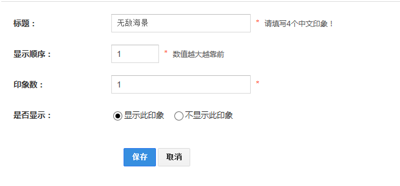
2、在“房友印象管理里面，点击以下两个按钮，可以进行编辑和删除操作。
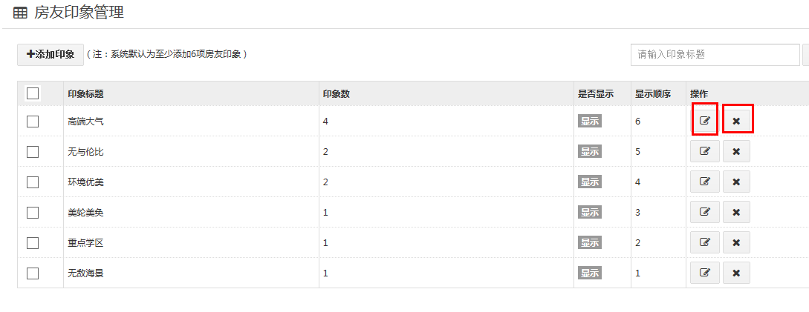
1、进入“专家点评“管理界面，点击”添加点评“，添加标题、设置显示顺序、专家姓名、专家职位、上传专家照片、编辑专家介绍和专家点评，点击保存；
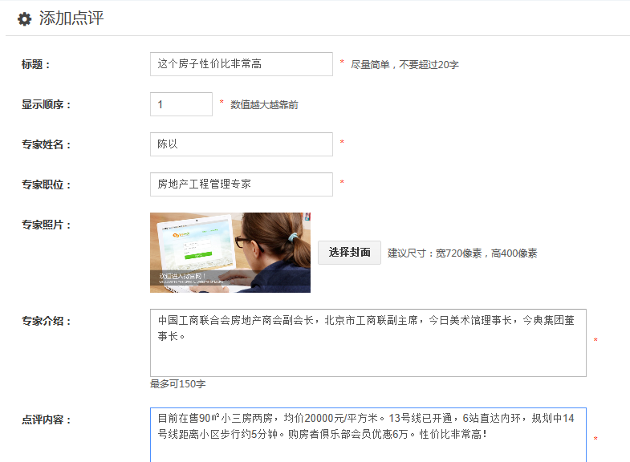
2、进入“专家点评管理“界面，点击以下两个按钮，可以进行编辑和删除操作。
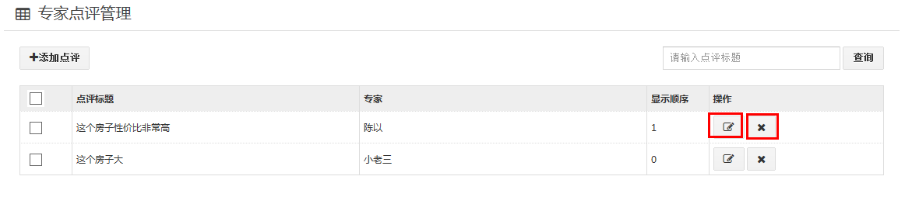
当您完成了以上内容设置之后，您的微房产官网的内容就都添加完成了，接下来去设置一下前台页面吧。
1、首先，添加喜帖，设置喜帖的标题，以及触发的关键字，上传喜帖的图文封面和开场动画的封面、喜帖主页的小图标，填写新浪新娘的名字，联系电话、婚庆日期、婚庆地点；
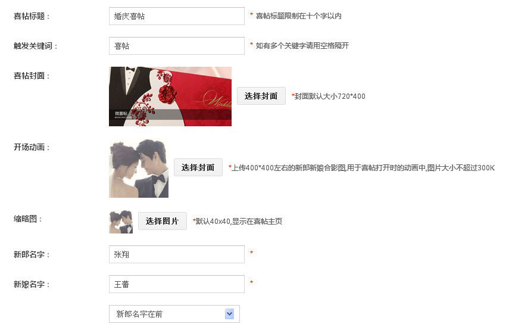
2.上传喜帖视频、背景音乐、婚纱照等；
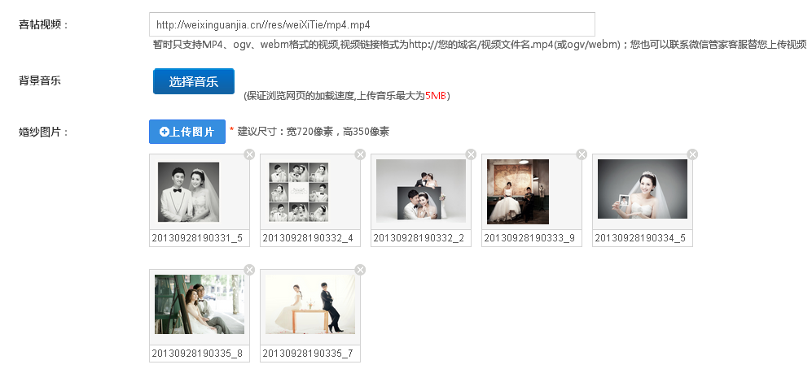
3、设置微信上查看来宾名单的验证密码，想对来宾说的话，保存即可。
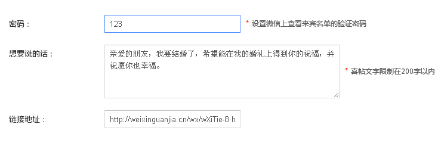
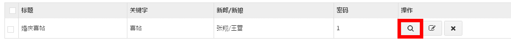
1、点击上图所示的图标，进入信息列表界面，可以查看赴宴名单和收到的祝福：
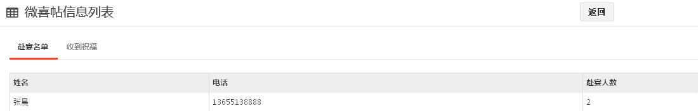
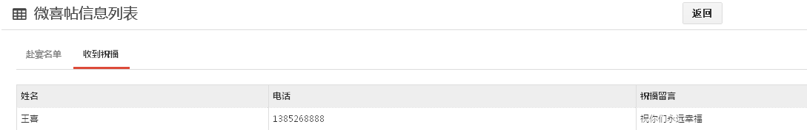
使用微酒店可进行酒店管理功能，设置酒店信息、房间信息，并支持在线预约房间，创造销售机会，也方便商户管理。
使用方法：
1、点击新建订房，进入编辑酒店信息页面，设置触发关键词、酒店名称、上传图文封面、填写酒店地址、酒店电话、上传订单页头部图片、设置地图标识，以实现一键导航功能；
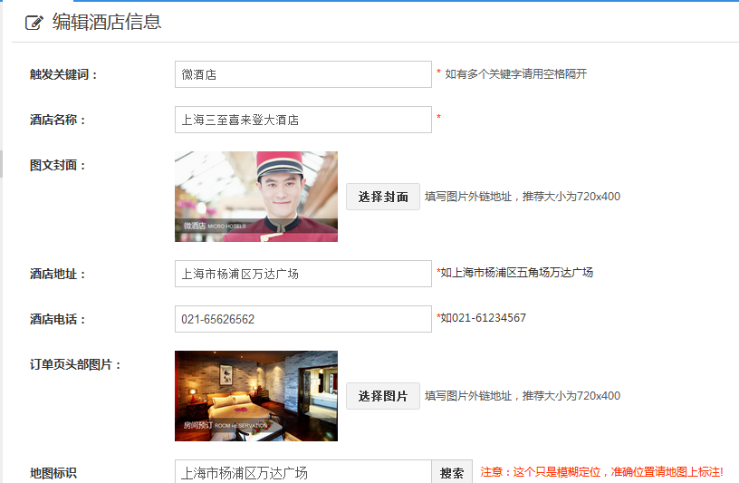
2、上传商家图片：点击添加图片，编辑文章描述、设置排序、上传图片，图片大小建议800x600；
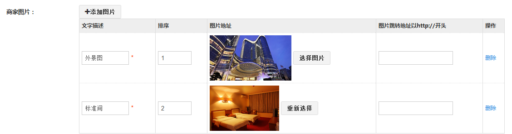
3、编辑商家介绍、订房说明；
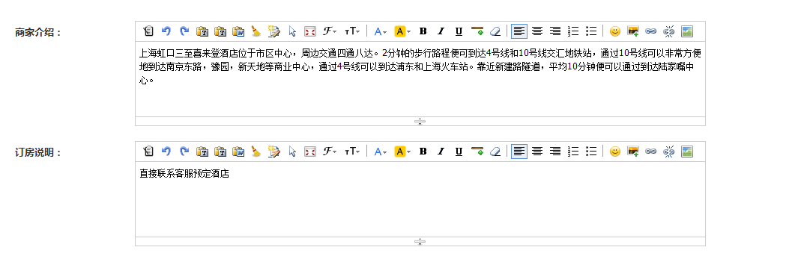
4、订单内容设置：例如：联系人、联系电话、预约日期、选择数量，商家可以根据自己的需求，可对酒店各房间的类型、价格、图片、配套设施进行填写，以供用户针对性的选择房型预订，点击保存
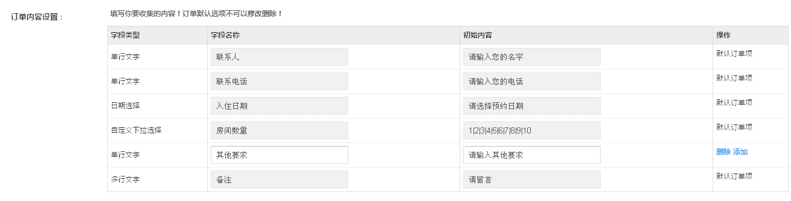
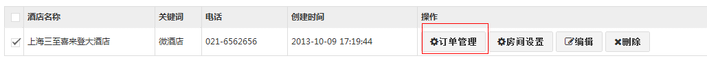
1、点击订单管理，进入订单管理页面，会出现客户预订的信息；
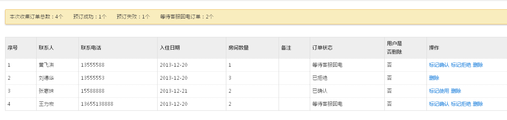
2、商家可以点击右上角根据时间查询“等待客服确认”、“已确认”、“已拒绝”的客户信息；
1、点击房间设置，进入房间设置页面，新增房间类型、简要说明、原价、优惠价、上传图片、编辑配套设施；
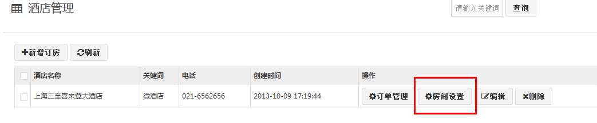
2、点击保存即可。